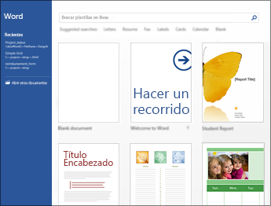
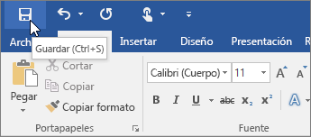
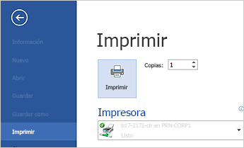

¿que es word?
Word 2016 está diseñado para ayudarle a crear documentos de calidad profesional. Word también puede ayudarle a organizar y escribir documentos de forma más eficaz.
Word 2016 está diseñado para ayudarle a crear documentos de calidad profesional. Word también puede ayudarle a organizar y escribir documentos de forma más eficaz.
En muchas ocasiones, resulta más sencillo crear un documento a partir de una plantilla que empezar con una página en blanco. Las plantillas de Word están listas para su uso, con temas y estilos predefinidos. Todo lo que tiene que hacer es agregar contenido. Si prefiere no usar una plantilla, haga clic en Documento en blanco.
Para guardar un documento por primera vez, haga lo siguiente: 1-En la pestaña Archivo, haga clic en Guardar como. 2-Busque la ubicación donde quiere guardar el documento. 3-Haga clic en Guardar.
1-En la pestaña Archivo, haga clic en Imprimir.

*En Imprimir, escriba el número de copias que desea imprimir en el cuadro Copias.
*En Impresora, asegúrese de que está seleccionada la impresora que desea.
*En Configuración, se encuentran seleccionados los valores de configuración de impresión predeterminados para la impresora. Si desea cambiar algún parámetro, haga clic en el mismo y seleccione otro nuevo.